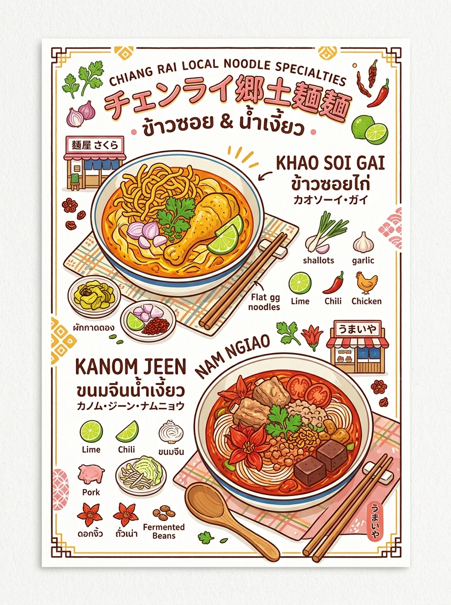
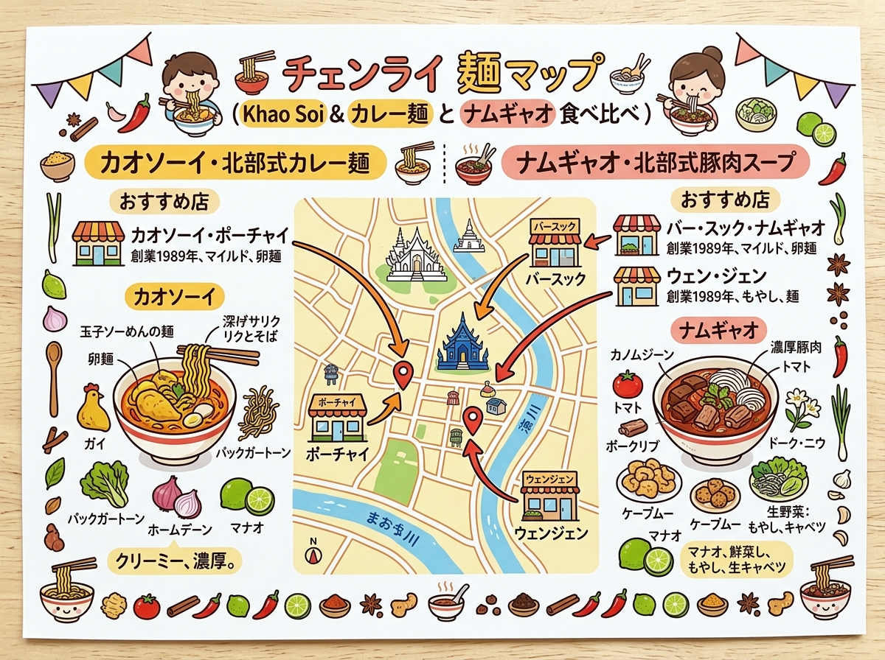

01
カオソーイ・ポーチャイ（Khao Soi Pho Chai / ข้าวซอยพอใจ）
チェンライ伝統の「あっさり澄んだスープ仕立て」。ココナッツミルクのしつこさがなく、スパイスが軽やかに香る。平打ち卵麺とサクサク揚げ麺の相性が抜群。
在住日本人が直面しやすい手続きやトラブル、日本人会への連絡・相談方法の一覧。
クリックすると拡大して詳細を確認・印刷できます。

旅行者の持ち歩き・印刷に適した手書き風インフォグラフィック。

位置関係やルート、全体像を俯瞰できるワイドデザイン。
現地調査および公的データに基づく最新詳細情報。
チェンライ伝統の「あっさり澄んだスープ仕立て」。ココナッツミルクのしつこさがなく、スパイスが軽やかに香る。平打ち卵麺とサクサク揚げ麺の相性が抜群。
創業50年超の殿堂店（Wongnai受賞常連）。乾燥トゥアナオ（発酵大豆）の香ばしいコク、完熟トマトの爽やかな酸味、大粒豚ひき肉、キワタの花（ドーク・ギョウ）、豚血豆腐が絶妙に調和した濃厚仕込み。
ワット・プラケオ近くの濃厚派名店。スパイスを効かせた深みのあるカレースープに、ホロホロになるまで煮込まれた大ぶり牛肉が絶品。手打ち生麺のコシが強い。
創業50年以上の雲南チンホー系ハラール老舗。クミンやカルダモンが芳醇に香る本格カレースープ。自家製高菜漬け（パッカアド・ドーン）の自然な酸味が味を引き締める。
地元民に長年愛される伝統ナムギョウ老舗。豚骨ベースにトゥアナオの旨味とトマトの酸味が溶け込んだ王道の北タイ・チェンライスープ。太米麺（センヤイ）との組み合わせも人気。